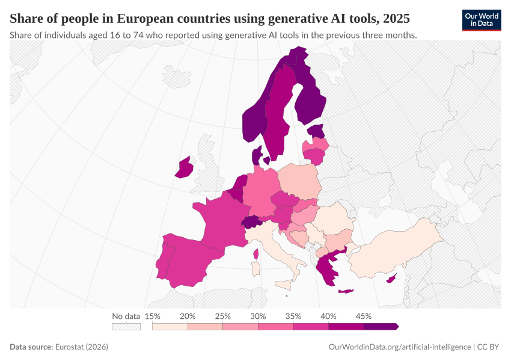
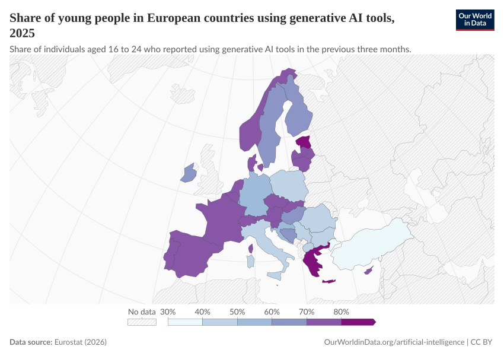
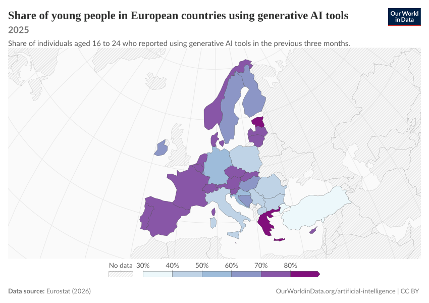

Chart Type:
All (2)
WorldMap (2)
Showing
2
of 2 differences
share-europe-using-generative-ai
Copy
Side by Side
Swipe
Code Diff (185)
Deleted
Added

share-of-young-people-in-european-countries-using-generative-ai-tools
Copy
Side by Side
Swipe
Code Diff (185)
Deleted

Added
